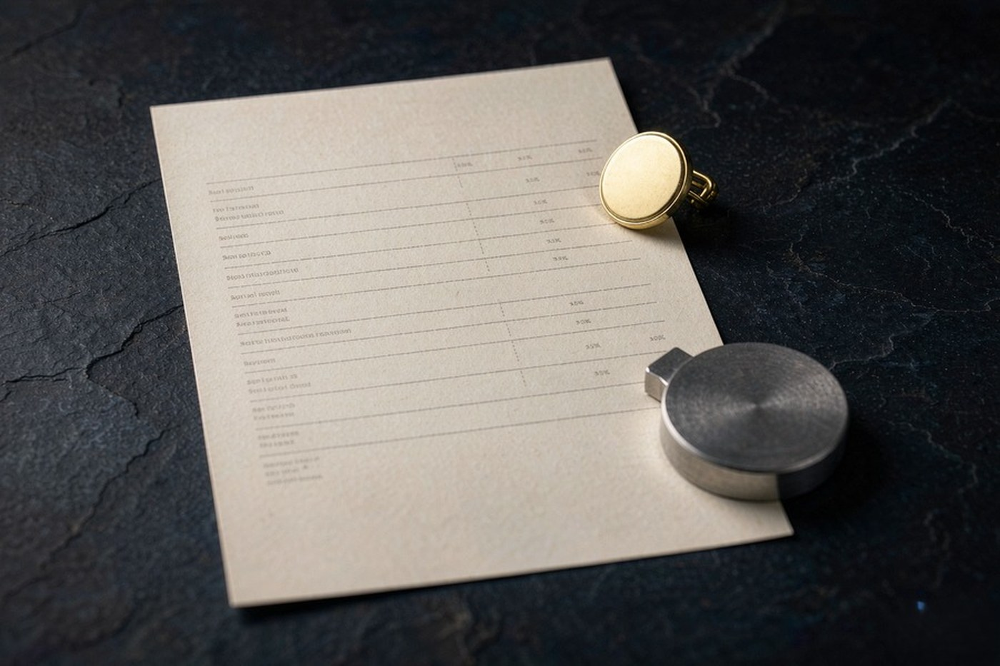
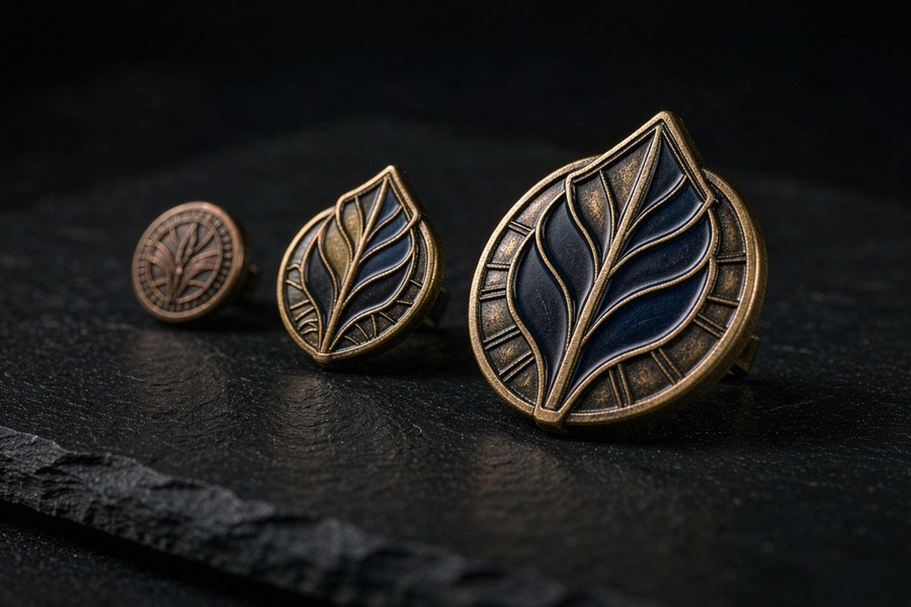
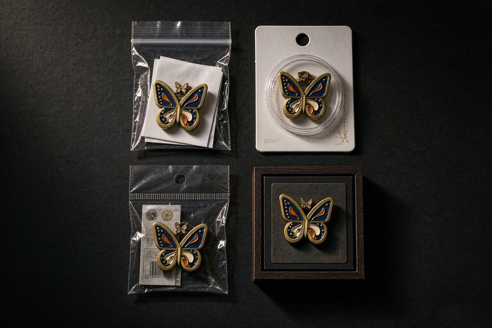

The most common question we get is not about quality. It is about the gap between two quotations. One factory comes back well under the other for the same design, the same quantity and the same finish, and the buyer is left deciding which number is honest.
Usually the gap is not a bargain or a trick. It is the difference between two factories pricing different specifications, because the specifications were never written down. One quote was built on a stamped 0.3 mm brass pin with four enamel colours. The other was built on a 3D die cast, a harder enamel and a gift box. They are not the same product, so they are not the same price.
This guide takes the quotation apart. Nine variables move it, and after reading through them you will know which ones you set, which ones we set, and which ones you can still change after the artwork is drawn.

The five lines every quotation is built from
Before the variables, the structure. A quotation from us is itemised into five lines, and each one answers a different question:
Tooling
Cutting the steel mould that stamps your design. It is a one-off cost per design, not a per-piece cost, and it is credited back if you move from a sample into production on the same artwork.
Production
Stamping, die striking, casting, polishing and enamelling. This is the part that scales with your quantity, and it is where the size and the process you chose show up.
Plating
The electroplated finish on the metal. We run twelve plating and surface finishes, and the finish changes the cost of the plating stage itself.
Packaging
How each pin reaches the shelf. Quoted separately, because it is a real decision with a real range rather than a rounding error.
Freight
Getting the shipment from our floor to your warehouse. It depends on the destination, the volume and the trade term, and we show it as its own line whichever term you choose.
If you compare two quotations against each other, compare them line by line. A quotation that looks higher but breaks out tooling, plating and freight separately is often telling you more than a lower one that bundles everything into a single figure. And if a factory will not show you the breakdown, that is information too.
Size and gauge
A pin is cut from sheet metal, and the sheet has a thickness. Brass and iron are stamped from 0.3 mm sheet, stainless steel from 0.4 mm. A larger pin needs more area from the same sheet, and the metal itself moves with the size of the pin. Solid metal changes the picture again: brass and bronze can be die struck from solid stock between 1.0 and 1.5 mm, and bronze in that form is reserved for die striking. Our base metal guide sets out which metal belongs to which process and what each one decides.

The practical consequence is that a 30 mm pin is not a 25 mm pin that got enlarged. Detail that reads cleanly at 25 mm can crowd at 30 mm, and the artwork has to be adjusted rather than stretched. The size guide covers the diameter choices and what each one carries well.
Line width and colour count
This is the variable buyers most often do not know they control, and the one with the most room to move. Every metal line in the artwork has to be at least 0.3 mm wide, and every colour block has to be at least 0.3 mm across, or the feature cannot be made. Hard enamel is lapped flat until the colour sits level with the metal, which leaves a thinner film and a lower practical limit: up to four colours. Soft enamel is left recessed, so the fill stays thick enough to hold up to six.
The design file specifications give the full rules, including the minimum text height for each diameter and the limits of what can be filled with enamel.
Why does this move the price? Because detail at the limit of the process takes longer to get right. Thin lines, many separate colours and small text all push the design towards the edge of what the process can hold, and every feature that needs adjusting, checking or reworking is time on every piece in the run. If the artwork is comfortable rather than at the limit, the run goes more predictably.
This is also the variable most worth revisiting. A redrawn version that keeps the look but merges two colours or thins a font can bring a design back inside the limits, and it often costs nothing at all to try before the proof goes out.
Base metal
The metal is part of the specification, and the specification is fixed when the mould is cut. It decides the gauge, and therefore the minimum line width the design can carry, and therefore which processes are open to you. It also moves with the commodity market: brass, iron and stainless steel are all traded metals, and the World Bank commodity data tracks where copper, aluminium and the other non-ferrous inputs have been trading. A quotation issued in a quiet month and one issued in a volatile one are not quoting the same metal.
What this means for you is that a quotation is a point-in-time statement about a material. It holds for the period it was issued and it assumes the specification you approved. If the metal moves before you place the order, it is worth asking for a re-quote rather than assuming the old number still stands.
Plating and finish
We run twelve plating and surface finishes, from bright gold through antique gold and matte ruthenium to black nickel with the surface glare taken off. They are not a single menu with one price. Plating is a chemical bath, and the chemistry, the thickness and the finishing steps differ from one finish to the next, which is why the plating line appears as its own line in the quotation.
The plating finishes guide explains what each of the twelve is and how the older finishes are produced.
Tooling, and what happens on a repeat order
Tooling is the one-off cost of cutting the steel mould. It is charged once per design. On a repeat order inside the three-year window, the mould is taken out of archive and the run starts at production, with no re-tooling stage. That changes the schedule as well as the cost, which is why a repeat order is usually the cheapest unit price you will ever be offered on a design.
Two things follow from this. First, the specification is locked: because the metal and the design were fixed when the mould was cut, a change of either means a new mould. Second, if you are going to iterate, iterate on the proof, where corrections are free, rather than on the metal, where they are not.
The samples page covers the sampling route in detail, including how a sample is cut on the same tooling the production run will use.
Quantity
Quantity affects the unit cost because the fixed work gets spread. A small batch runs alongside other work in the current production window. A mid volume run gets the standard production window of seven to ten business days, with a five business day rush possible where a window allows. A high volume order is scheduled as a dedicated run with capacity reserved against your delivery date.
It also affects what is included. A small batch ships polybagged or on a backing card. A mid volume order can carry a blister card, a header bag or a bulk carton. A high volume order is packed into bulk cartons for your own distribution. A repeat order runs on the archived mould with no re-tooling stage. The bulk ordering guide has the full table.
One point worth making plainly: there is no minimum order quantity. A single piece is a legitimate order, and larger quantities can be split across deliveries if that suits your stock planning. Different sizes of the same design can be scheduled in one run, because they often share a mould.
Packaging
Four formats, and the range between them is wide:
- Single polybag, the default. The cheapest way to get a pin into a box.
- Blister on a backing card.
- Header bag with your own printed card and barcode.
- Gift box.

Packaging is quoted on its own line because it is a genuine cost and a genuine choice. If the pin is going straight into a bulk carton for your own distribution, the retail packaging is not needed at all. If it is going on a shop shelf, it is one of the larger decisions in the whole order.
Freight and duty
Freight depends on the destination, the volume and the trade term, which is why it is quoted as a separate line rather than folded into the unit price. Under FOB the freight is separate and you can compare carrier rates yourself. Under CIF it includes freight and marine insurance to the destination port. Under DDP duty and clearance are already inside the price.
Duty is a separate matter again, and it is yours, not ours, unless we have arranged clearance. Look up the HS code for the product in the tariff schedule of the country you are importing into. For the United States that is the Harmonized Tariff Schedule published by the US International Trade Commission. We declare the HS code we use and you can check the rate independently.
Our guide to FOB, CIF and DDP covers the trade terms in full, including who carries the risk in transit.
What you can still change
Here is the part worth keeping. Of the nine variables above, five are effectively fixed once the design exists, and four are still in your hands.
Fixed once the mould is cut
- Base metal and gauge. Set at the tooling stage, along with the minimum line width the design can carry.
- The tooling charge itself. It is a one-off cost per design, and the only way to avoid it later is to reorder the same design.
- The design as drawn. Changing it means a new mould and a new charge.
- Freight, to a large extent. Once the shipment is packed its weight and volume are what they are. The trade term is still your choice, and that choice does change the total.
Still in your hands
- Artwork complexity. Line width, colour count and text size. Redrawing to sit comfortably inside the limits is the cheapest lever there is, and often it is free.
- Process. Where the artwork allows it, a different process changes the tooling story and the schedule. Offset printed needs a print plate rather than a steel mould, which is why it is the fastest process we run.
- Packaging. The single polybag is the default. Moving up the range is a deliberate decision, and moving down is often possible.
- Quantity and schedule. A rush is possible where a production window allows, and a smaller split delivery can suit your stock planning.
The practical order of operations is this. Get the artwork right first, because everything else is priced against it. Send us what you have, a photograph of the item or a hand sketch is genuinely enough to start, and our designers vectorise from whatever arrives. We come back with a 2D and 3D CAD proof inside twelve hours, and the designers mark anything that is tight on the metal with a proposed alternative. That proof is free and carries no obligation, and it is where you make the decisions that move the price.
Questions we get about pricing
Because no single number describes a pin honestly. Every order differs in size, process, base metal, plating and colour count, and one price would misrepresent all of them. What we can do is itemise the quotation by tooling, production, plating, packaging and freight, so you can see what each part contributes and decide where to spend your budget.
Simplify the artwork. Thin line work, many separate colours and small text all push the pin towards the limits of what the process can hold, and the workarounds cost time on every piece. We will tell you on the CAD proof where a feature is tight, and often a redrawn version solves it without changing the design at all.
The unit cost generally falls as the quantity rises, because the fixed work of cutting the mould and setting up the run is spread across more pieces. It is not linear, and it is not the only factor that matters. A large order that has to be scheduled as a dedicated run, or that needs retail packaging on every piece, carries costs that a smaller bulk-packed order does not.
No. The mould is cut once and archived for three years, so a repeat order of the same design inside that window runs on the archived mould with no new tooling stage. The tooling charge is also credited back when you move from a sample into production on the same design, so you are not paying twice for the same piece of steel.
The metal sets the gauge the pin is made from, and the gauge sets how fine the line work can be. Brass and iron are stamped from 0.3 mm sheet, stainless steel from 0.4 mm, and bronze and brass can be die struck from solid metal between 1.0 and 1.5 mm. The heavier the starting stock, the more material is involved in every piece. We will tell you which metals can carry your design before you commit.
Four formats are available: a single polybag as the default, a blister on a backing card, a header bag with your own printed card and barcode, and a gift box. Packaging is quoted separately because it is a real cost and a real decision. A polybag is the cheapest way to get a product into a box, and a gift box is the most expensive by a wide margin.
Sometimes, and it is worth asking. Offset printed is the fastest process we run because it needs a print plate rather than a steel mould. But it constrains the detail and the tactile quality, so it is not a like-for-like substitute for hard enamel. The right comparison is between designs that look the same, not between processes that do not.
It depends on the trade term you choose and on the destination, which is why we quote freight as its own line rather than folding it in. Under FOB the freight is separate and you can compare carrier rates yourself. Under DDP it is already inside the price. We will show the freight as a separate line whichever term you pick, so the comparison between quotations stays honest.
See what your own design costs
Send the artwork, the quantity and the delivery date. You get a 2D and 3D CAD proof with an itemised quotation within 12 hours, and there is no minimum order quantity.